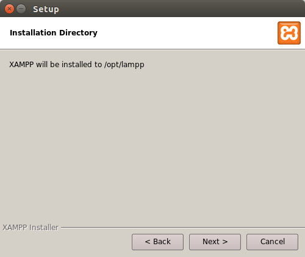

xamp
Установка XAMPP на Ubuntu 16.04 (Linux).
XAMPP — это независимая серверная платформа, которая состоит главным образом из базы данных MySQL, веб-сервер Apache и переводчиков на скриптовых языках: PHP и Perl. Название происходит от аббревиатуры:
X — для любых различных операционных систем,
Apache — веб-сервер,
MySQL — система управления базами данных,
PHP — язык программирования,
Perl — так же является языком программирования.
Программа выпущена под лицензией GNU лицензию и выступает в качестве бесплатного веб-сервера, он прост в использовании и способен интерпретировать динамические страницы. В настоящее время XAMPP доступен для основных операционных систем, всех дистрибутивов Linux, Microsoft Windows и в MacOS X.
Установка XAMPP.
Для преступления непосредственно к самой установке требуется скачать установщик. Скачать можно воспользовавшись терминалом. Последней версией XAMPP на момент написания статьи является 7.0.4/PHP 7.0.4. Выбираем разрядность в зависимости от Вашей операционной системы и скачиваем.
для 32-битной версии:
wget https://www.apachefriends.org/xampp-files/7.0.4/xampp-linux-7.0.4-0-installer.run
для 64-битной версии:
wget https://www.apachefriends.org/xampp-files/7.0.4/xampp-linux-x64-7.0.4-0-installer.run
После того как скачается пакет, требуется изменить разрешения для данного установщика. Воспользовавшись следующей командой, где, вместо * прописываем нужную версию (для 32-бит 7.0.4-0, а для 64-бит x64-7.0.4-0).
sudo chmod 755 xampp-linux-*-installer.run
Доступ к установщику получили, теперь запускаем процесс установки.
sudo ./xampp-linux-*-installer.run
Запустится графический установщик. Далее следуем инструкциям. Нажимаем на Next.
Подтверждаем установку жмём Next.
Подтверждаем установку в директорию /opt/lampp, жмём Next.

Далее убираем галочку, нажимаем на Next.
Снова подтверждаем установку Next.
Далее начнётся процесс распаковки файлов XAMPP. Ждём окончания процесса.
На этом шаге установка закончена. Жмём Finish, после чего запустится наш сервер.
Графический интерфейс сервера запущен, для ознакомления много времени не потребуется.

Настало время проверить работоспособность этого парня. Переходим во вкладку Manage Servers. Запускаем все компоненты сборки, Start all.
После того как все компоненты запустятся, открываем браузер и в адресной строке вводим localhost.
Для перехода в phpMyAdmin переходим по адресу localhost/phpmyadmin.
Папка с сайтом. Добавление сайтов.
По умолчанию, домашней директивой сайтов является каталог /opt/lampp/htdocs. Теперь давайте создадим новый сайт, назовём его, например 'newsite'. Для добавления нового сайта создаём папку (в домашней директиве), под таким же названием 'newsite'. Должно получиться - /opt/lampp/htdocs/newsite. Создадим в данной папке файл index.html с простой разметкой. Например:
<!doctype html>
<html>
<head>
<title>Newsite</title>
</head>
<body>
<h1>Наш новый сайт newsite!</h1>
</body>
</html>
Переходим по ссылке localhost/newsite. И на белом фоне видим надпись созданную в разметке, вот и все на этом наш сайт создан. Как изменить домашнюю директиву и ознакомиться с другими настройками XAMPP можно в следующей статье.
Команды для XAMPP
Для запуска XAMPP используем команду:
sudo /opt/lampp/lampp start
Для остановки XAMPP используем команду:
sudo /opt/lampp/lampp stop
Если хотите чтобы XAMPP запускался автоматически с запуском операционной системы, используйте команды для Debian и Ubuntu.
sudo ln -s /opt/lampp/lampp /etc/init.d/lampp
sudo update-rc.d lampp start 80 2 3 4 5 . stop 30 0 1 6 .
Управлять сервером удобно графическим инструментов и для его запуска используем команды:
cd /opt/lampp
sudo ./manager-linux.run (или manager-linux-x64.run)
Либо заходим в папку /opt/lampp и запускаем двойным кликом по файлу manager-linux.run.
Так же всю подробную информацию о версиях и других подробностях можете получить на официальном сайте XAMPP.